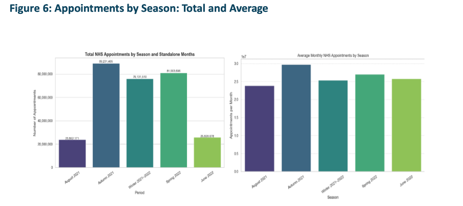

NHS Resource Utilisation & Missed Appointments
Data-driven insights into demand, missed appointments, and public sentiment.
This project was completed as part of the LSE DA201: Diagnostic Analytics with Python course.
Final Score: Distinction (89%)
Executive Summary
Why this matters
- GP demand now averages 25.8M appointments/month – 15% above pre-COVID levels
- Clinics operate at 115% of planned capacity – no slack for shocks
- 4.7% of capacity is lost to missed appointments (DNA), mainly from short-notice and remote bookings
Board-level actions:
- Target DNA hotspots – SMS reminders for bookings ≤ 7 days
- Rebalance staffing – Shift resources to high-demand ICBs and manage seasonal peaks
- Monitor sentiment – Track hashtags like #NHSCrisis and #ThankYouNHS weekly
Tools & Techniques
Languages & Libraries: Python, Pandas, NumPy, Matplotlib, Seaborn, Scikit-learn, Statsmodels, Plotly, Dash, Geopandas, TextBlob
Techniques Applied:
- Descriptive statistics and exploratory data analysis (EDA)
- Seasonal demand analysis (bar charts by period)
- Logistic regression to model DNAs
- ROC curve and AUC evaluation (AUC = 0.569)
- Twitter sentiment analysis with TextBlob
- Hashtag filtering using regex
- Utilisation mapping and ICB comparisons
- Date parsing and seasonal categorisation
- Prototype dashboards using Plotly & JupyterDash
Dashboard Highlights
KPIs Overview

From Aug 2021–Jun 2022: 25.8M avg. appointments/month, peaking at 29.1M. Face-to-face = 61.7%, GP-led = 90.7%. DNA rate = 4.69%. Cornwall led (6,201 per 1k), South East London trailed (3,850 per 1k).
Capacity Utilisation vs Planning Limit

NHS operated above 100% planned capacity throughout, peaking at 120% in Oct 2021 — evidence of structural overuse.
Detailed Capacity Utilisation
Persistent over-utilisation across regions confirms systemic pressure, not isolated seasonal peaks.
Missed Appointments Trends

DNAs ranged 4.2–5.18%, spiking at 1.5M in Oct 2021. Logistic regression confirmed short-notice and remote bookings as strongest predictors.
Appointment Volume by Season
Autumn & Winter had the highest volumes (~90M). June and August dipped due to holidays.
Predicting Missed Appointments
Telephone and video bookings had higher DNA risk vs face-to-face. Lead time (days before booking) also mattered. AUC = 0.569, indicating moderate predictive power.
Public Sentiment – Twitter Hashtags

Conversations focused on #healthcare, #digitalhealth, and workforce issues (#job, #staffing). Peaks aligned with NHS performance dips and policy debates, showing social media as a proxy for trust.
Live HTML Notebook Preview
Download Full Report (PDF) üåê Open Notebook Download Notebook (.ipynb)